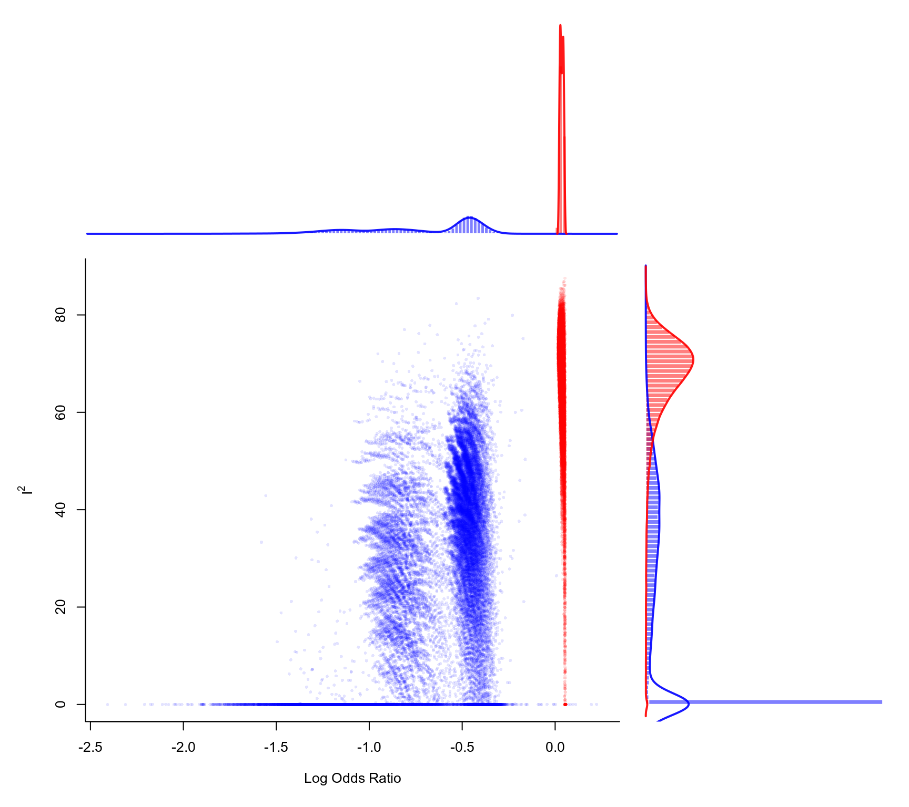

plot.gosh.rma.RdFunction to plot objects of class "gosh.rma".
# S3 method for class 'gosh.rma'
plot(x, het="I2", pch=16, cex, out, col, alpha, border,
xlim, ylim, xhist=TRUE, yhist=TRUE, hh=0.3, breaks,
adjust, lwd, labels, ...)an object of class "gosh.rma" obtained with gosh.
character string to specify the heterogeneity measure to plot. Either "I2", "H2", "QE", "tau2", or "tau" (the last two only for random/mixed-effects models).
plotting symbol to use. By default, a borderless filled circle is used. See points for other options.
symbol expansion factor.
optional integer to specify the number of a study that may be a potential outlier. If specified, subsets containing the specified study are drawn in a different color than those not containing the study.
optional character string to specify the color of the points (if unspecified, points are drawn in black). When out is used, two colors should be specified (if unspecified, red is used for subsets containing the specified study and blue otherwise).
optional alpha transparency value for the points (0 means fully transparent and 1 means opaque). If unspecified, the function sets this to a sensible value.
optional character string to specify the color of the borders of the histogram bars. Set to FALSE to omit the borders.
x-axis limits. If unspecified, the function sets the x-axis limits to some sensible values.
y-axis limits. If unspecified, the function sets the y-axis limits to some sensible values.
logical to specify whether a histogram should be drawn for the x-axis (the default is TRUE).
logical to specify whether a histogram should be drawn for the y-axis (the default is TRUE).
numeric value (or vector of two values) to adjust the height of the histogram(s). Must be between 0 and 1, but should not be too close to 0 or 1, as otherwise the plot cannot be drawn.
optional argument passed on to hist for choosing the (number of) breakpoints of the histogram(s).
optional argument passed on to density for adjusting the bandwidth of the kernel density estimate(s) (values larger than 1 result in more smoothing).
optional numeric value to specify the line width of the estimated densities. Set to 0 to omit the line(s).
optional argument to specify the x-axis and y-axis labels (or passed on to pairs to specify the names of the variables in the scatter plot matrix).
other arguments.
For models without moderators, the function draws a scatter plot of the model estimates on the x-axis against the chosen measure of heterogeneity on the y-axis for the various subsets. Histograms of the respective distributions (with kernel density estimates superimposed) are shown in the margins (when xhist=TRUE and yhist=TRUE).
For models with moderators, the function draws a scatter plot matrix (with the pairs function) of the chosen measure of heterogeneity and each of the model coefficients. Histograms of the variables plotted are shown along the diagonal, with kernel density estimates of the distributions superimposed. Arguments xlim, ylim, xhist, and yhist are then ignored, while argument hh can be used to compress/stretch the height of the distributions shown along the diagonal.
Olkin, I., Dahabreh, I. J., & Trikalinos, T. A. (2012). GOSH - a graphical display of study heterogeneity. Research Synthesis Methods, 3(3), 214–223. https://doi.org/10.1002/jrsm.1053
Viechtbauer, W. (2010). Conducting meta-analyses in R with the metafor package. Journal of Statistical Software, 36(3), 1–48. https://doi.org/10.18637/jss.v036.i03
Viechtbauer, W. (2021). Model checking in meta-analysis. In C. H. Schmid, T. Stijnen, & I. R. White (Eds.), Handbook of meta-analysis (pp. 219–254). Boca Raton, FL: CRC Press. https://doi.org/10.1201/9781315119403
gosh for the function to create the input to a GOSH plot.
### calculate log odds ratios and corresponding sampling variances
dat <- escalc(measure="OR", ai=ai, n1i=n1i, ci=ci, n2i=n2i, data=dat.egger2001)
### meta-analysis of all trials including ISIS-4 using an equal-effects model
res <- rma(yi, vi, data=dat, method="EE")
### fit FE model to all possible subsets (65535 models)
sav <- gosh(res, progbar=FALSE)
### create GOSH plot
### red points for subsets that include and blue points
### for subsets that exclude study 16 (the ISIS-4 trial)
plot(sav, out=16, breaks=100)
